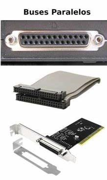
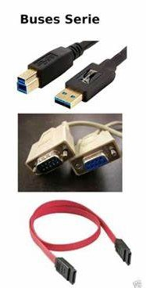

1.2.4.1 Tipos de Buses
Bus es una palabra inglesa que significa “transporte”. En arquitectura de computadores, un bus puede conectar lógicamente varios periféricos sobre el mismo conjunto de cables. Aplicada a la informática, se relaciona con la idea de las transferencias internas de datos que se dan en un sistema computacional en funcionamiento. En el bus todos los nodos reciben los datos aunque no se dirijan a todos éstos, los nodos a los que no van dirigidos los datos simplemente los ignoran.
Existen dos grandes tipos clasificados por el método de envío de la información: paralelo o serial.
Hay diferencias en el desempeño y hasta hace unos años se consideraba que el uso apropiado dependía de la longitud física de la conexión: para cortas distancias el bus paralelo, para largas el serial.
BUS PARALELO
Es un bus en el cual los datos son enviados por bytes al mismo tiempo, con la ayuda de varias líneas que tienen funciones fijas. La cantidad de datos enviada es bastante grande con una frecuencia moderada y es igual al ancho de los datos por la frecuencia de función computadores ha sido usado de manera intensiva, desde el bus del procesador, los buses de discos duros, tarjetas de expansión y de vídeo, hasta las impresoras.
El Front Side Bus de los procesadores Intel es un bus de este tipo y como cualquier bus presenta unas funciones en líneas dedicadas:
Las Líneas de Dirección con el que se desea establecer comunicación.
Las Líneas de Control son las encargadas de enviar señales de arbitraje entre los dispositivos. Entre las más importantes están las líneas de interrupción, DMA y los indicadores de estado.
Las Líneas de Datos trasmiten los bits, de manera que por lo general un bus tiene un ancho que es potencia de 2.
Un bus paralelo tiene conexiones físicas complejas, pero la lógica es sencilla, que lo hace útil en sistemas con poco poder de cómputo. En los primeros microcomputadores, el bus era simplemente la extensión del bus del procesador y los demás integrados “escuchan” la línea de direcciones, en espera de recibir instrucciones. En el PC IBM original, el diseño del bus fue determinante a la hora de elegir un procesador con I/O de 8 bits (Intel 8088), sobre uno de 16 (el 8086), porque era posible usar hardware diseñado para otros procesadores, abaratando el producto.

BUS SERIE
En este los datos son enviados, bit a bit y se reconstruyen por medio de registros o rutinas de software. Está formado por pocos conductores y su ancho de banda depende de la frecuencia. Es usado desde hace menos de 10 años en buses para discos duros, tarjetas de expansión y para el bus del procesador.
